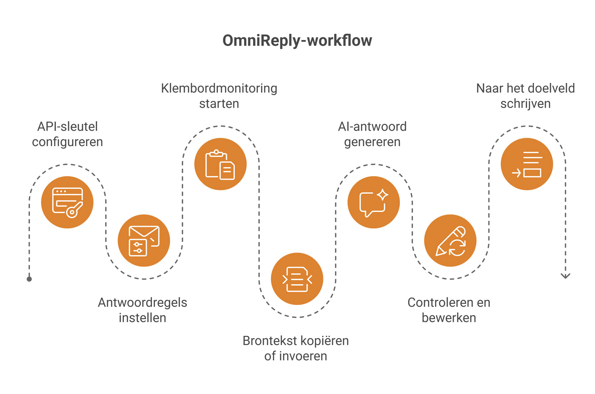
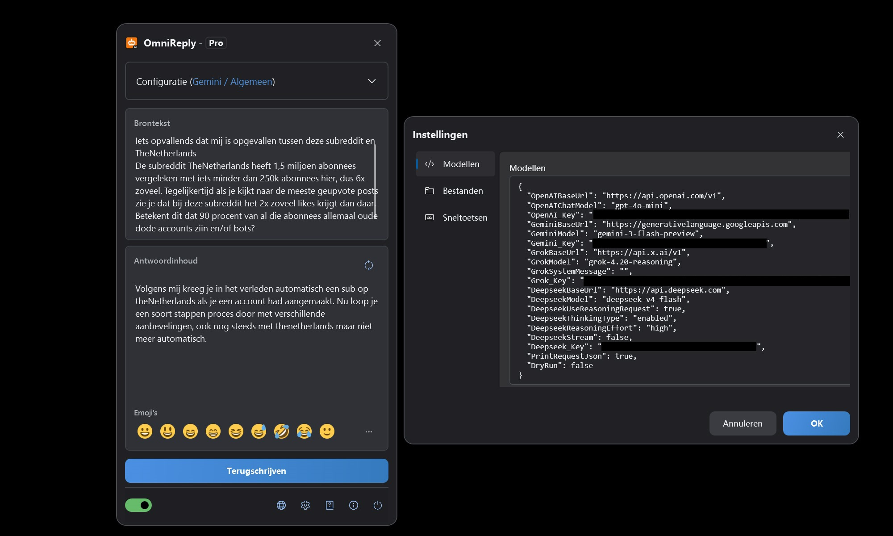
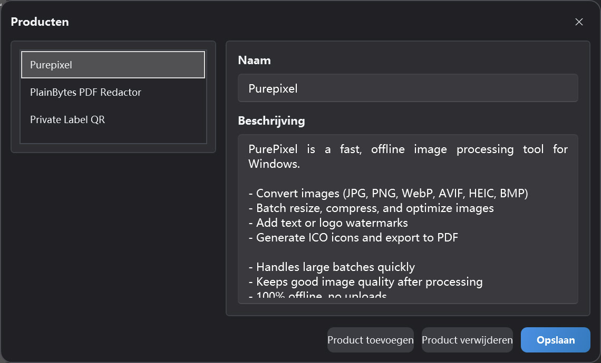

Clipboard-driven AI reply assistant
OmniReply Gebruikershandleiding
Deze handleiding legt de interface, configuratie, AI-antwoordgeneratie en terugschrijffunctie van OmniReply uit. Begin met de snelstart en gebruik de detailhoofdstukken later als naslagwerk.
1. Kennismaken met OmniReply
OmniReply verkort de afstand tussen het lezen van een bericht en het schrijven van een passend antwoord. De app vangt brontekst op, maakt een conceptantwoord, laat je dit controleren en typt het daarna terug in de doelapp.
1.1 Wat OmniReply is
OmniReply is een Windows-desktopassistent voor snelle AI-antwoorden. De app monitort gekopieerde tekst, combineert die met je gekozen model, scène, taal, stijl, antwoorddoel en lengte, en genereert vervolgens een bewerkbaar antwoord. Na controle kun je de tekst terugschrijven naar een invoerveld in een andere toepassing.
1.2 Veelgebruikte situaties
Sociale reacties
Bereid natuurlijke antwoorden voor op opmerkingen, privéberichten, posts en communitygesprekken.
Klantenservice
Zet gebruikersvragen snel om in duidelijke uitleg, geruststelling, vervolgstappen of supportantwoorden.
Productaanbevelingen
Gebruik productinformatie om korte aanbevelingen, functieuitleg en vergelijkende antwoorden te maken.
1.3 Basisworkflow

2. Interface en functies
Het dagelijkse werk gebeurt vooral in het zwevende hoofdvenster. Het instellingenvenster en productbeheer worden voornamelijk gebruikt voor configuratie.
2.1 Hoofdvenster
| Onderdeel | Doel | Tip |
|---|---|---|
| Titelbalk | Toont de appnaam en huidige editie. Het venster kan worden ingeklapt tot de zwevende bol. | Klap het venster in wanneer het niet in de weg moet staan terwijl je op gekopieerde tekst wacht. |
| Configuratiegedeelte | Kies model, scène, taal, stijl, doel, lengte en product. | Genereer opnieuw nadat je regels hebt gewijzigd, zodat de nieuwe instellingen worden toegepast. |
| Brontekst | Toont vastgelegde klembordtekst en ondersteunt ook handmatige invoer. | Handig wanneer kopiëren onpraktisch is of wanneer je de brontekst eerst wilt aanpassen. |
| Antwoordgebied | Toont het gegenereerde AI-antwoord en laat je het bewerken. | Controleer feiten, toon en gevoelige inhoud voordat je terugschrijft. |
| Emojibalk | Voegt veelgebruikte emoji-tekens toe aan het antwoord. | Ingevoegde emoji blijven teksttekens en kunnen worden bewerkt of verwijderd. |
| Statusbalk | Beheert klembordmonitoring, taal, instellingen, info en afsluiten. | Zet klembordmonitoring aan voordat je automatische vastlegging gebruikt. |

2.2 Status van de zwevende bol
In ingeklapte toestand wordt OmniReply weergegeven als zwevende bol. Je kunt de bol verslepen en dubbelklikken om het hoofdvenster weer te openen. De kleur geeft de servicestatus aan: een gekleurde bol betekent dat klembordmonitoring actief is; een grijze bol betekent dat monitoring uit staat. Terwijl OmniReply wacht op een AI-antwoord kan de bol ook een lopende aanvraag tonen.
2.3 Instellingenvenster
Modelinstellingen
Beheer API-sleutels, basis-URL's en modelnamen voor OpenAI, Gemini, Grok en DeepSeek.
Netwerkinstellingen
Schakel indien nodig een handmatige HTTP-proxy in. Als deze uit staat, gebruikt OmniReply de systeemproxyconfiguratie.
Sneltoetsinstellingen
Wijzig de globale sneltoetsen voor venster tonen, monitoring schakelen, vernieuwen en terugschrijven.
Bestandsinstellingen
Kies de geschiedenismap. Als er geen map is geselecteerd, wordt geschiedenis niet opgeslagen.
2.4 Productbeheer
Productbeheer bewaart productnamen en productbeschrijvingen voor het huidige profiel. Wanneer het antwoorddoel een productaanbeveling is, wordt de geselecteerde productbeschrijving als context meegestuurd zodat het antwoord nauwkeuriger op het product kan ingaan.

3. Snelstart
Volg deze stappen bij het eerste gebruik. Daarna bestaat de dagelijkse workflow meestal uit kopiëren, controleren en terugschrijven.
API-sleutel toevoegen
Open Instellingen en voer de API-sleutel in voor de AI-dienst die je wilt gebruiken. Ongebruikte aanbieders kun je leeg laten. Voor het momenteel geselecteerde model moet een geldige sleutel aanwezig zijn.
Antwoordregels instellen
Kies model, scène, taal, stijl, antwoorddoel en antwoordlengte. Voor een productaanbeveling selecteer je ook het relevante product.
Klembordmonitoring starten
Zet de schakelaar voor klembordmonitoring in de statusbalk aan, of druk op Ctrl + Shift + X.
Brontekst kopiëren of invoeren
Kopieer een vraag, opmerking of bericht uit een andere app. Je kunt brontekst ook direct in OmniReply typen of plakken en daarna handmatig opnieuw genereren.
AI-antwoord genereren
Nadat nieuwe tekst is gekopieerd, leest OmniReply deze uit en roept het geselecteerde model aan. Klik op Vernieuwen of druk op Ctrl + Shift + R om opnieuw te genereren.
Controleren en bewerken
Het antwoordveld is bewerkbaar. Pas formuleringen aan, verwijder overbodige stukken, voeg context toe of plaats emoji. Sla de controle niet over omdat het concept door AI is gemaakt.
Naar het doelveld terugschrijven
Klik eerst in het invoerveld van de doelapp, zodat de cursor op de juiste plek staat. Klik daarna op Terugschrijven of druk op Ctrl + Shift + Enter.
4. Functies in detail
Dit hoofdstuk legt uit wat elke instelling doet en hoe deze het uiteindelijke antwoord beïnvloedt.
4.1 AI-modellen en API-sleutels
| Modeloptie | Vereiste instelling | Beschrijving |
|---|---|---|
| ChatGPT (OpenAI) | OpenAI_Key | Gebruikt een OpenAI-compatibel Chat Completions-eindpunt. Basis-URL en modelnaam kunnen worden ingesteld. |
| Gemini (Google) | Gemini_Key | Gebruikt Google Gemini. De Gemini-basis-URL en modelnaam kunnen worden ingesteld. |
| Grok (xAI) | Grok_Key | Gebruikt xAI Grok. Basis-URL, modelnaam en systeembericht kunnen worden ingesteld. |
| DeepSeek (DeepSeek) | Deepseek_Key | Ondersteunt OpenAI-compatibele verzoeken of DeepSeek-reasoning-instellingen. |
Het geselecteerde model bepaalt welke sleutel nodig is. Aanbieders die je niet gebruikt, kunnen leeg blijven.
4.2 Antwoordregels
| Regel | Effect | Aanbeveling |
|---|---|---|
| Scène | Bepaalt het platform of de context van het antwoord, zoals sociale media, forum of support. | Kies de scène die het best aansluit op het echte gesprek. |
| Taal | Stuurt de uitvoertaal. Automatische taal probeert de broncontext te volgen. | Kies een specifieke taal wanneer het antwoord in één vaste taal moet blijven. |
| Stijl | Stuurt toon, persona en woordkeuze. | Voor openbare opmerkingen is een natuurlijke, vriendelijke en niet-opdringerige stijl meestal veiliger. |
| Antwoorddoel | Geeft de bedoeling aan, zoals aanbeveling, support, uitleg of weerlegging. | Controleer het doel vóór het genereren, omdat dit het concept sterk beïnvloedt. |
| Antwoordlengte | Bepaalt of de uitvoer kort, gemiddeld of uitgebreid moet zijn. | Voor sociale platforms is kort of automatisch vaak een goed beginpunt. |
4.3 Productgegevens voor aanbevelingen
Productgegevens bestaan uit de productnaam en productbeschrijving. Wanneer een aanbevelingsdoel is geselecteerd, stuurt OmniReply de beschrijving van het gekozen product als context naar de AI. Een goede productbeschrijving bevat:
- Welk probleem het product oplost.
- Belangrijkste functies en voordelen.
- Voor wie en in welke situaties het nuttig is.
- Of het offline werkt, gegevens uploadt of belangrijke beperkingen heeft.
- Duidelijke, realistische formuleringen zonder overdreven beloftes.
4.4 Klembordmonitoring
Wanneer monitoring is ingeschakeld, luistert OmniReply naar updates van het systeemklembord en leest het nieuwe tekst uit. Om onbedoelde triggers te verminderen, negeert de app lege tekst, herhaalde tekst en kopieeracties terwijl het OmniReply-venster zelf actief is.
4.5 Bewerken en emoji
Het antwoordgebied is een bewerkbaar tekstveld. Je kunt AI-gegenereerde tekst direct herschrijven of veelgebruikte Unicode-emoji invoegen via de emojibalk of pop-up. Sommige systemen of WPF-besturingselementen tonen emoji niet altijd in kleur, maar de ingevoegde tekens blijven standaard emoji-tekens.
4.6 Terugschrijven en sneltoetsen
Bij terugschrijven verbergt OmniReply eerst het eigen venster, wacht kort tot het doelveld opnieuw focus heeft en simuleert daarna toetsenbordinvoer teken voor teken. Regeleinden worden verwerkt met een gesimuleerde nieuwe-regeltoets. De standaardsneltoetsen zijn:
| Actie | Standaardsneltoets |
|---|---|
| Hoofdvenster tonen of verbergen | Ctrl + Shift + D |
| Klembordmonitoring starten of stoppen | Ctrl + Shift + X |
| Antwoord opnieuw genereren | Ctrl + Shift + R |
| Antwoord terugschrijven | Ctrl + Shift + Enter |
4.7 Geschiedenis
Nadat je in de bestandsinstellingen een geschiedenismap hebt gekozen, kan OmniReply brontekst, gegenereerde antwoorden en aanvraagtijden opslaan. Als er geen geschiedenismap is gekozen, wordt er geen geschiedenis weggeschreven.
5. Gegevens, privacy en licentie
OmniReply bewaart instellingen en profielgegevens op je apparaat. AI-verzoeken worden rechtstreeks naar de AI-dienst gestuurd die jij kiest.
5.1 Lokaal opgeslagen gegevens
| Gegevens | Beschrijving | Beheer door gebruiker |
|---|---|---|
| App-instellingen | Modeleindpunten, API-sleutels, proxy-instellingen, sneltoetsen, geschiedenisinstellingen en verwante opties. | Bekijken en bewerken in het instellingenvenster. |
| Profielen en productgegevens | Het huidige profiel, productlijst, gekozen scène en antwoordregels. | Beheren in het hoofdvenster en Productbeheer. |
5.2 Wat AI-verzoeken bevatten
Bij het genereren van een antwoord stuurt OmniReply de brontekst, huidige antwoordregels, noodzakelijke productcontext en modelparameters naar de geselecteerde AI-dienst. Verzoeken worden uitgevoerd met je eigen API-sleutel. OmniReply leidt je verzoeken niet via een tussenserver.
5.3 Veilig omgaan met API-sleutels
- Deel geen configuratiebestanden die API-sleutels bevatten.
- Op gedeelde computers moet je instellingen en geschiedenis passend opruimen of beveiligen voordat je weggaat.
- Controleer vóór het kopiëren van gevoelige inhoud het privacy- en gegevensbeleid van de gekozen AI-dienst.
- Als er geen geschiedenismap is ingesteld, bewaart OmniReply geen brontekst of gegenereerde antwoordgeschiedenis.
5.4 Free- en Pro-edities
| Editie | Beschrijving |
|---|---|
| Free | Staat 10 modelgeneraties per lokale kalenderdag toe en kan sommige regelkeuzes beperken. |
| Pro | Ontgrendelt Pro-functies. Aankoop- en licentiestatus worden weergegeven in het licentievenster van de app. |
6. FAQ en probleemoplossing
Als iets niet werkt zoals verwacht, begin dan hier. De meeste problemen hebben te maken met de monitoringschakelaar, API-sleutels, netwerk- of proxy-instellingen, sneltoetsconflicten of focus in het doelinvoerveld.
6.1 Er gebeurt niets na het kopiëren
Controleer achtereenvolgens:
- Is klembordmonitoring ingeschakeld in de statusbalk?
- Is de gekopieerde inhoud platte tekst en niet leeg?
- Wacht OmniReply nog op het vorige AI-verzoek?
- Is de gekopieerde tekst exact gelijk aan de vorige vastgelegde tekst?
- Heb je gekopieerd binnen het OmniReply-venster? Kopieeracties vanuit het actieve OmniReply-venster worden genegeerd.
6.2 API-sleutel niet ingesteld
Voor de aanbieder van het geselecteerde model is geen sleutel ingesteld. Open Instellingen en voer de API-sleutel voor die aanbieder in, of schakel over naar een model waarvan de aanbieder al is ingesteld.
6.3 AI-verzoek mislukt of time-out
Veelvoorkomende oorzaken zijn een ongeldige sleutel, opgebruikt tegoed, drukte bij de dienst, netwerkproblemen, verkeerde proxyconfiguratie of een time-out. Controleer eerst of je browser en systeemproxy de AI-dienst kunnen bereiken, en controleer daarna basis-URL, modelnaam en API-sleutel in Instellingen.
6.4 De taal of stijl van het antwoord klopt niet
Controleer taal, scène, stijl, antwoorddoel en antwoordlengte. Voor OpenAI-compatibele modellen wordt een vaste taal opgenomen in de systeemprompt. Als de uitvoer nog steeds wisselt, kies dan een specifieke doeltaal en genereer opnieuw.
6.5 Het antwoord kwam op de verkeerde plek terecht
Klik vóór het terugschrijven in het doelveld en controleer of de cursor op de juiste plek staat. Terugschrijven simuleert toetsenbordinvoer; als de focus in een ander venster of besturingselement staat, wordt het antwoord daar getypt.
6.6 Sneltoetsen werken niet
De sneltoets wordt mogelijk al door een andere app gebruikt. Open het tabblad Sneltoetsen in Instellingen en kies een combinatie met Ctrl, Shift, Alt of Win die niet botst met systeemsneltoetsen.
6.7 Problemen met emojiweergave
Op sommige systemen geven WPF-tekstvelden emoji niet betrouwbaar in kleur weer. Ook als emoji in OmniReply monochroom lijken, zijn ingevoegde en teruggeschreven emoji meestal standaard Unicode-tekens. Of ze in de doelapp in kleur verschijnen, hangt af van die app en de systeemlettertype-ondersteuning.
6.8 Geschiedenis is niet opgeslagen
Geschiedenis wordt alleen opgeslagen als er in de bestandsinstellingen een geschiedenismap is geselecteerd. Een lege mapinstelling betekent dat er geen geschiedenis wordt vastgelegd. Controleer of de map bestaat en je gebruikersaccount schrijfrechten heeft.
6.9 Wat moet ik meesturen bij een supportmelding?
Noem de appversie, Windows-versie, het geselecteerde model, foutbericht, of je een proxy gebruikt, of het probleem reproduceerbaar is, de stappen om het te reproduceren en eventueel screenshots. Verstuur geen echte API-sleutels.